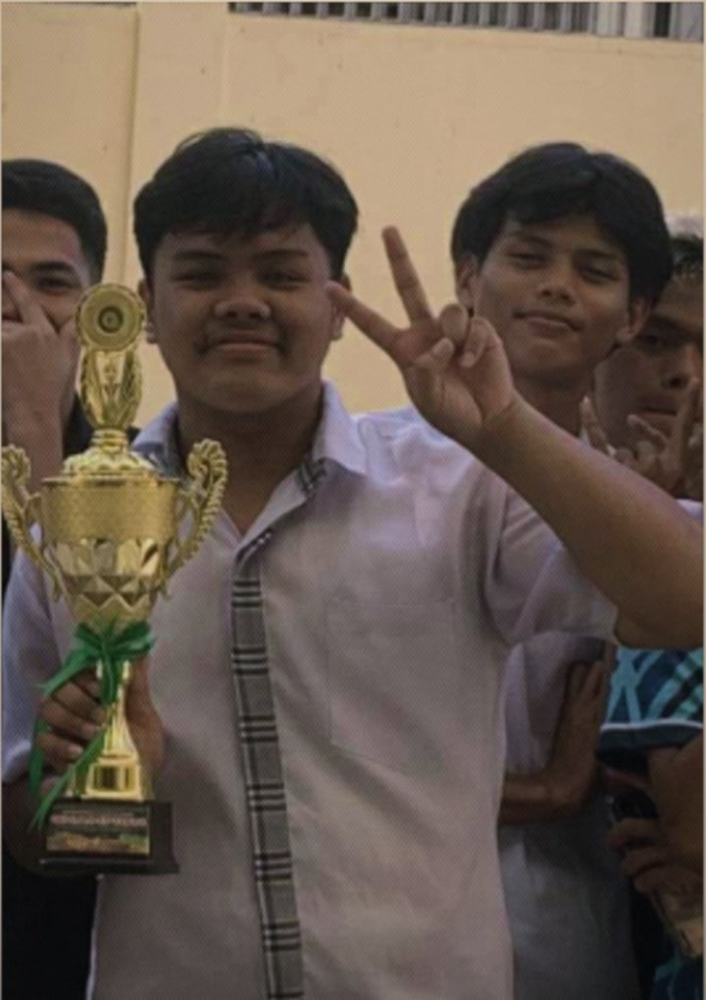

March 24, 2026
Please don’t skip this Josh… I wrote this from my heart.
Hi Josh! ☺️
I think this will be the last time that I will tell you my feelings. It’s been 9 months since I started liking you, and I am really grateful for those 9 months because you made my last year in high school very happy. That day I saw you for the first time, I was late sa CSS nga time. I didn’t even see you at first, but sila Delfin ni kalit rag ingon, “Piad, transferee oh Joshua daw name.” And that was the first time I saw your face. I don’t know what kind of spark I felt that day. At first, gina sungog ko nila kay lagi crush daw tika, But at that time, wala pa jud koy gusto sa imo not until the first time you played volleyball. You really love playing volleyball, and that was the moment I first saw you smile. I think that was the time my heart started beating so fast. It felt like you pulled me out of the darkness, and that was the day I fell for you. Sometimes I ask myself if I fell for you because of the way you play volleyball, but I realized it’s not about that, it's because of your smile.
During that time, wala pa jud laing nakabalo nga naa koy gusto sa imoha not even my circle of friends. I never thought nga mabaw-an nila because of sungog-sungog. Halos everyday nalang sila sige og panungog sila Delfin, about sa lagi nakagusto daw kos imoha without knowing nga tinood jud nga naa koy gusto sa imo. As the days passed nga sige silag panungog, to be honest, malain ko sometimes or mailang sa ilang sungog kay basin masuko ka kay gara na kaayo sila, or basin samokan naka sa ilaha. Kay mismo ako, gisamokan pud ko to the point nga mas maulaw nako mutagad nimo kay basin malain ka sa way nila mag yagayaga. I was really hoping at that time nga dili ka malain or masuko, kay basin maingnan kog pasikat or papansin nimo. Remember the last time nga naay contest sa senior high, which is katong Nutrition Month? It was the day nga happy kaayo akong heart. Because naa koy picture nato, kitang duha even though akong gi-crop ra pud HAHAHA.

Our first photo together.
I know it sounds weird or maybe a little psycho, but I was really happy tungod sa picture. For two straight days, sige kog tan-aw sa picture, then kalit ra kog smile. Happy kaayo akong heart that time. Gi-wallpaper pa nako sa akong phone keyboard ug PC kay lagi, happy kaayo ko. This one is during intramurals. I still remember that time sa intrams, kamo ang representative sa senior high sa volleyball. I was really happy nga kamo ang napili tungod kay naa ka lagi. And guess what? It was my first time attending intrams, kay in my entire high school life nga dili sapilitan, dili jud ko ganahan muadto ug intrams kay kapoy lagi. But I decided to go that time because I wanted to support you and see you. Og makita ka magdula, grabe kulang nalang jud mag-cheer ko didto, but I held back kay ulaw pud. During sa intrams, proud kaayo ko sa inyoha ato, especially sa imo. I know you gave your all! Even though wala mo nag champion, pero champion ka sa akong heart always.
And also, that was the first time I got hurt. It was because ana ka kay matarong that time nga imong jersey nga gisout kay sa imong uyab which I didn’t even know, that you had a girlfriend. Niuli kog nasakitan ato, but you still played so well jud sa intrams. Sa imong mga sets pa lang WOW jud! Namangha jud ko sa imong talent. But that was the first time I found out nga naa kay uyab, and I realized that you’re straight. And everything went back to reality, so I distanced myself kay lagi, you have a girlfriend and you’re straight and I respect that. Ana pako, “Straight man siya, okay, bounce nata,” kay lagi, impossible kaayo. But as time passed, my feelings never faded! Dili jud siya mawala, sa sobra ka mongol nako ni absent ko for 3 days just to try to move on! But still, dili jud. After sa intrams, when we went back to class, I asked matarong directly if it was true nga naa kay uyab. Ana sya, yes, naa jud daw kay uyab. Mao to nasakitan ko! I tried many ways nga kalimtan ang feelings nako nimo because sakit kaayo! Miskan watay label pero it was very hard to move on, pero wa jud effect ang tanan ways nga akong gi buhat.
During atong nag-lamay mi sa inyo, at first I was very happy kay nakita tika. Even sila Eltanal kabalo nga grabe kaayo ko namugos nga mag-lamay sa inyo because I wanted to pay my respects as a friend since namatyan mo. During ato, nag-adto pa tag dike, ana pa si Eltanal ato sa room sako nga, “Ikaw piad ba, mag-ulaw-ulaw man ka, imbis makig shake hands si Joshua nimo dili jud ka.” I don’t know if what he said was true, but maulaw jud ko makig physically interact sa imo. And also, that was the day that I found out nga INC ka. To be honest, wala jud ko problema sa imong religion it’s just that since INC ka, impossible jud kaayo ang tanan. Since nakabalo ko nga INC ka, I decided nga after graduation day, I will move on and try to be better. Wala jud koy problema sa imong religion ha, I really respect it! But dili man gud pwede sa inyoha ang kapareha nako. So I decided nga e-stop na jud ni kay lagi, impossible jud kaayo dili jud siya pwede.
Lastly, kani kay katong sa ligo nato sa Santander. I asked you unsay plano nimo after graduation, and you said mo balhin ka somewhere idk where but not here sa Davao, which means totally dili na jud ta magkita. I was so sad because I thought mag-naa pay chance nga makita taka diri sa Davao, but since wala naka diri sa davao og dili nata ka tapok pa ta ninyo, murag naka huna huna ko nga dili man jud sang-ayon ang kalibutan sako. So, I think it’s much better nga mag-move on nalang.
Always remember Josh that I want you to be successful in life. May your success be louder than your pain and struggles. I know nga dili nata magkita after this graduation day, so this is the right time for me to move on. It’s not an easy thing to do, but I’m trying my best to be better. I hope we can remain friends after graduation. I swear, ug mo una kag tagad, dili nako mag-ulaw-ulaw. I badly want to be your friend. Daghan pa unta kog gustong ingnon nimo, but sadly, I’m too shy hehe.
Always take care of yourself, Josh. If you need someone to talk to, I will always be here for you. I will always support you no matter what! It was really nice meeting you, Josh you made my high school life memorable. And even if I remain just someone in the background of your story, always know that when I cared, I cared sincerely without pressure, without expectation, and without pretending to be anything other than myself. I WAS SO LUCKY TO MEET YOU! 🤍
No matter what happens, I’ll always remember you. You changed my life in ways I can’t explain. Let me just say this for the first time and the last time
I love you, my Josh, with every piece of my heart.